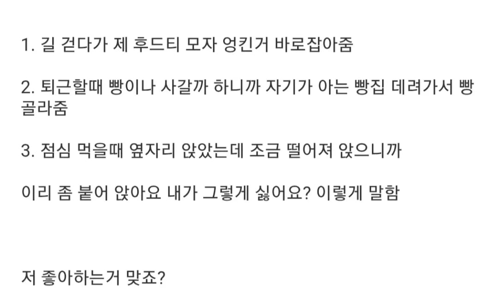

이게아니라면 충격일듯

이게아니라면 충격일듯
저정도면 눈치를 너무 못채서 티를 낼대로 내고있는 수준임
저정도했는데 여자가 아니라고하면 여자가 ㅆㄴ이지...
진지하게 말하면 아님.
진짜 좋아하면 말도 안걸음
후 나한테 눈도 마주치지않고 말도 안거는 김양에게 오늘 고백박습니다
길거리의 모든 여자들이 날 좋아한다니
아닌 것 같은데 그냥 편하게 친해지고픈 사람 같은데...
이걸 왜 인터넷에 물어보냐. 그냥 본인이 당사자랑 대화를 나누세요
아니라고 하면 바로 관계박살나잖아 ㅠ
헤벌쭈기내다가 영화보고 데이트신청헤봐
퇴근하고 연락옴? 안오면 없는거임
여자가 나한테 질문을 많이하면 100%이긴한데 애매하네
원래 저런 성격인 사람들이 있음.
아니면 이성으로 보이지도 않아서
동성 대하 듯 하는거던가.
퇴근 후 연락이 오냐 안 오냐가 찐이지.
따로 단 둘이 약속 계속 잡히는 거 아니면 호감 아니니까 착각하지마라
대학생도 아니고 직장동료인데 저렇게 흘리고 다니는 경우도 있음? 이건 빼박 호감같은디 따로 약속 잡히면 빼박이고 아니면 걍 흘려보내면 될듯?
업무시간이었다면 업무의 일환입니다
글쓴이가 쓴 다른 글이 파묘된 게 개드립에 있었던가 ㅋㅋㅋ
사실 여직원따윈없음
1. 좋아하면 후드 머리에 씌우는 장난까지 침
2. 좋아하면 빵을 고른 후 사 줌
3. 좋아하면 먼저 붙어 앉은 후에 내가 그렇게 싫어요? 하고 말 함.
이리 좀 붙어앉으라고 안하고 좋아하면 보통 본인이 붙음..
호감이 항상 연애까지 이어지는건 아님..
호감작 존나햇는데 ㅅㅂ 헛수고엿노
좋아하냐고요?ㅋㅋ 제가 왜요
이성적 호감은 애매하지 않다.
아리까리하면 아님